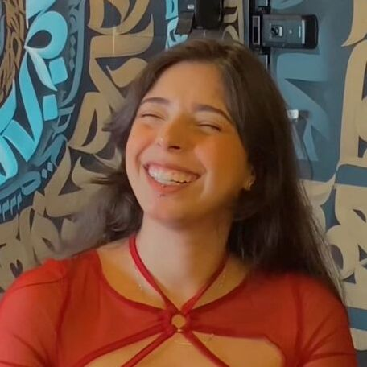
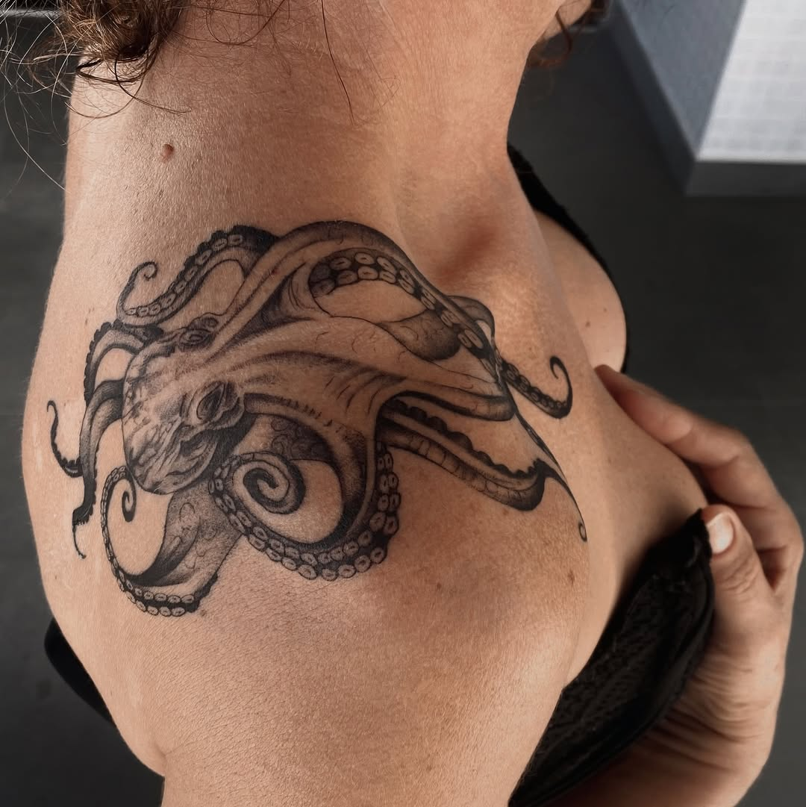
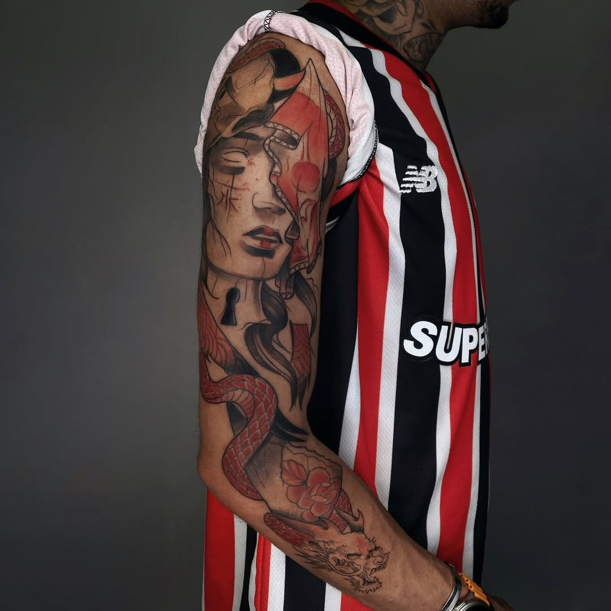

Osasco SP - Balneário Camboriú - SC

Delakaytattoo

Oi, eu sou a Catarine, mais conhecida como Kayt. Sou tatuadora há 10 anos e minhas especialidades são blackwork e fine line. Sempre gostei muito de desenhar, e hoje tenho o prazer de trabalhar com o que amo.

